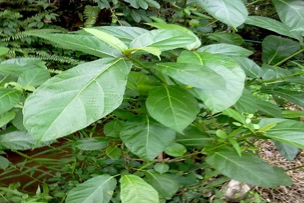

Latthe Education Society's Acharya Deshabhushan Ayurvedic Medical College And Hospital Bedkihal-Shamanewadi, 591214
Department of Dravyaguna Vigyana

Basonym of Drug
Kakoudumbara
Main Synonym
Malayu
Kasthodumbara
Jaghanephala
Switrabhaishjya
Phalgu
Malapu
Regional Name
Hindi: Kathumar
Tamil: Kattu-atti
Telugu: Brahmamedi
Gujarati: Devadavari
English: Hairy Fig, Devil Fig
Botanical Name
Ficus hispida
Family
Moraceae
Classification (Gana)
Acharya Charaka: Tikta Skandha
Bhavprakash Nighantu: Vatadi Varga
External Morphology
3-5 meter high tree
Useful Parts
Bark
Root bark
Fruit
Latex
Important Phytoconstituents
Beta sitosterol
Hispidine
Psoralen
Bergapten
Alkaloid
Rasa Panchak
Rasa: Tikta, Kashya
Guna: Laghu, Ruksha
Virya: Shita
Vipaka: Katu
Action
Kaphapittahara
Therapeutic Indications
Switrahara (useful in vitiligo)
Vranya (wound healing)
Grahi (reduces excessive discharges)
Pandughna (useful in anemia)
Atisarahara (anti-diarrheal)
Therapeutic Uses
Avabahuka: Latex of Kakoudumbara with asafoetida and Kauncha root powder are useful as Pradhaman Nasya therapy for disability and restricted movement of the shoulder.
Switra: Malapu decoction with Guda is beneficial in vitiligo.
Atisara: Decoction with Haritaki Churna is beneficial in diarrhea.